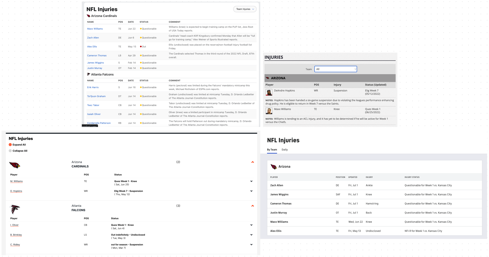
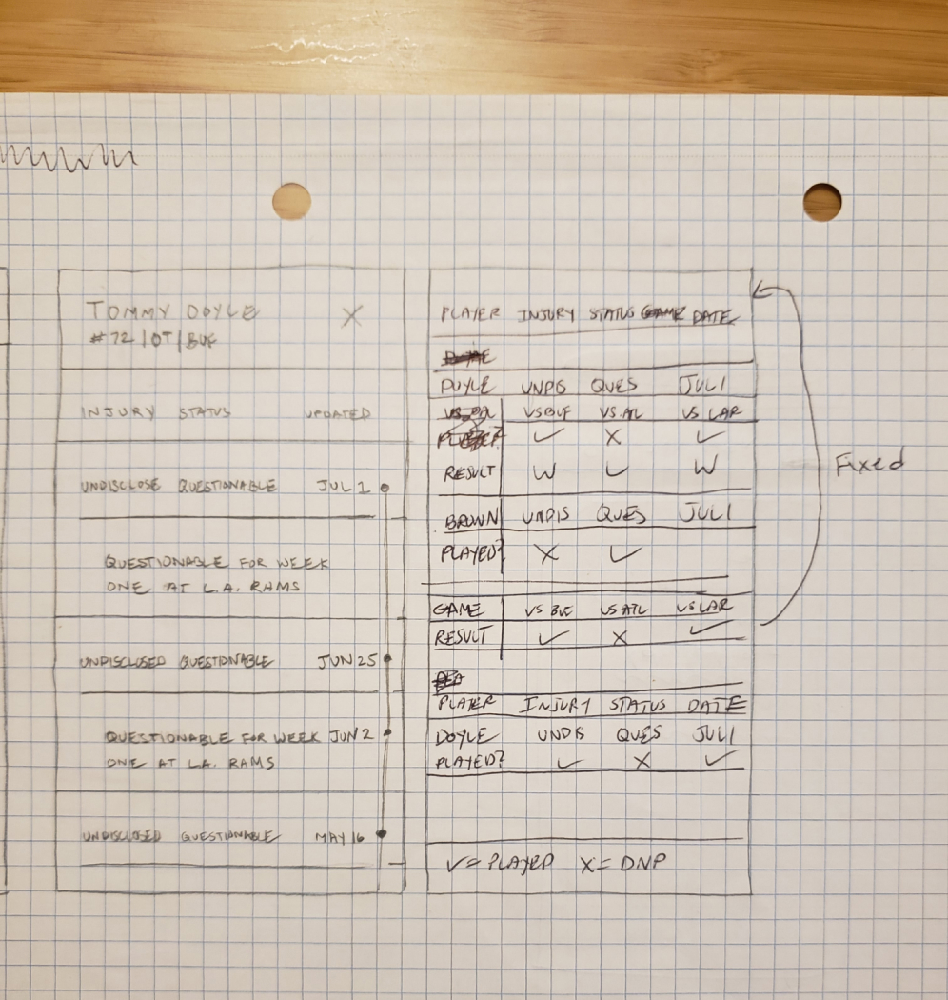
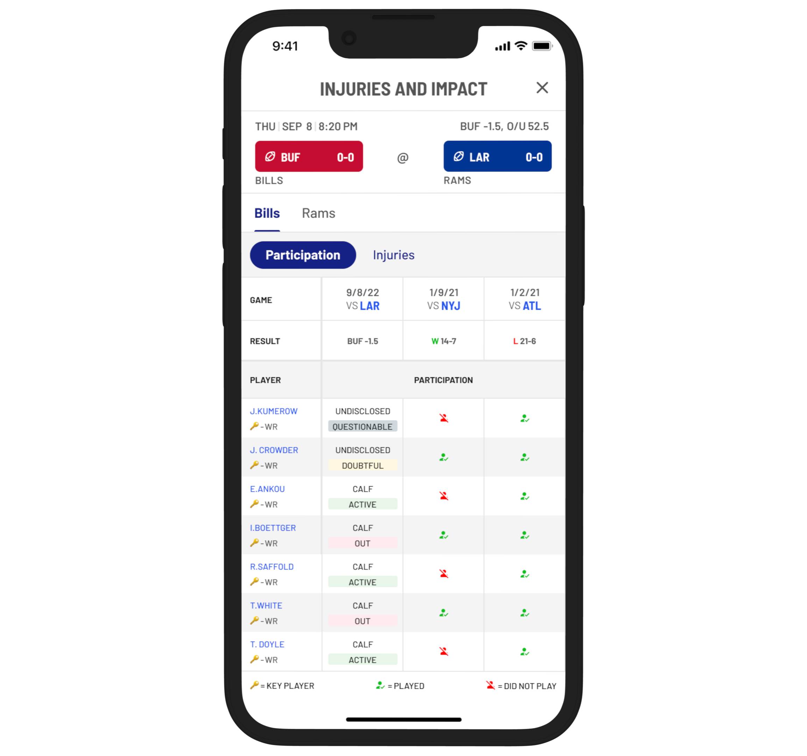
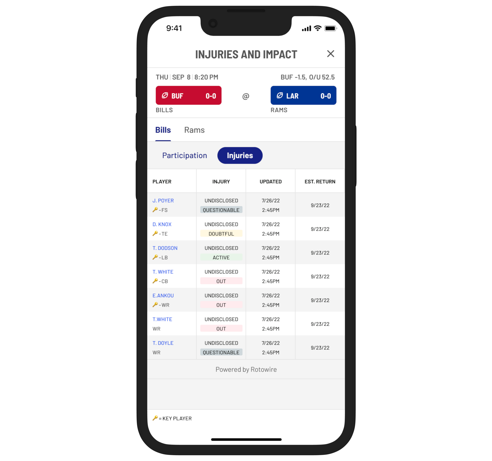
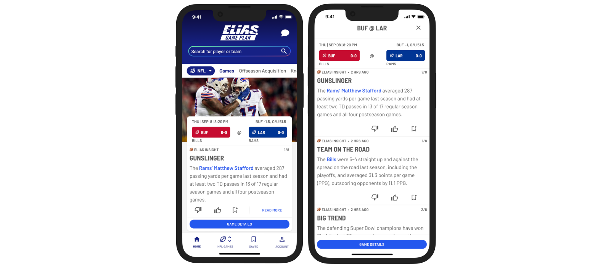

Solving the Biggest Problem Sports Bettors and Fantasy Sports Players Face
| Challenge | Design injury report features that both keep users informed about the status of player injuries as well as provide deeper insight into players' participation and impact on past games. |
| My Role | Research, experience design, visual design, interaction design |
| Process | User interviews, competitive analysis, brainstorming ideas, sketching concepts, prototyping solutions, usability testing, iterating based on feedback, user acceptance testing |
| Limitations | Some technical limitations and time restrictions caused some features to get put on hold. Also, due to a lack of licensing rights, no player headshots nor team logos can be used in designs. |
Accurate and Timely Injury Updates
Injury news and updates are critical to the sports bettor and fantasy sports player as player health and avaialbility have a major impact on sports bets and fantasy moves.

Game participation and injuries

User Interviews
Conducting a series of user interviews of both fantasy players and sports bettors provided great insight into the ins and outs of users' typical behaviors and frustrations.
"I get frustrated when a player who is listed as questionable/game-time decision. It's hard to determine whether or not they will play. I feel like some people (my brothers) have more intel than I do from listening to podcasts or having more knowledge in general of how injuries work within specific organizations."
Competitive Analysis
Conducting a competetive analysis was a great way for me to get an idea of what type of injury information is available out there already and what fans are used to seeing. Also, by seeing what's out there, I was able to get a sense of opportunity areas. For instance, most of the injury pages provide an injury status for players but you have to look elsewhere to determine a players most recent participation or how their absence impacted the team's performance in the past.


Sketching Design Concepts
After viewing the competitive landscape for injury reports. I noticed a lot of opportunity both for the presentation layer as well as the information that is made available. I wanted to design something more visually appealing but it soon became clear why a data table is typically used for this type of feature. There's a lot of info to pack into a small space!
View Player Participation
One of the key differentiators of the feature that I wanted to provide our users, that was lacking from other products, was the ability to assess historical participation of key players and how their participation or lack there of impacted the outcome of the game.
With so many data points to display, I had to decide which visual elements or infomation to omit from the screen in order to avoid an overly cluttered UI.
For this screen in particular, I made the decision to remove column headers for "injury" and "status". I combined the data points into one cell/column making the assumption that the info therin was intuitive enough to be self-explanitory without the need for column headers.
This was an assumption that I wanted to test in addition to whether or not test participants were able to decern what the various icons on the screen meant. To my delight, the majority of the test participants were able to accurate identify what icons meant as well as what information was being conveyed on the screen.


Check on Injury Updates
One of the specific pain points regarding injuries that was often mentioned by our interviewees was that it was often difficult to determine how accurate injury infomation is, when was the information last updated and when a player is expected to return to play if currently out.
The injuries tab displays a comprehensive list of player injuries and statuses for any givin team and is sorted by key players displaying at the top of the list.
Player Impact
A feature that I was particularly excited to bring to our users was the player impact tab. In this screen, I attempted to combine injury info with data that demonstrates specific details about the direct impact that key players have on their team's overall performance.
This is kind of like a +/- stat except I wanted to display how much on average specific team stats increased or decreased when a player was in or out of the game.
Unfortunaltely, beause of the complexity of a feature like this and the time restraints we faced to get the features built, this feature had to get sidelined.


Game Plan Insights
Conclusion
This project was one that I was happy and proud to work on because I knew what it meant to our users to have this type of infomation readily available to them. After the designs were implemented, I worked closely with our product manager to user acceptance test beta and production releases of the features in order to catch any bugs or incorrect implementations of the designs.
Through the process of this project I learned how greatly player injuries impact decision making for sports bettors and fantasy sports players.
There are a few things that I might have done differently: One is that I'd like to have pushed design exploration a bit further in terms of exploring options to display the injury information in a more visually interesting way without using tables. Also, having earlier conversations with engineers could have sooner revealed the limitations to presenting certain types of data and allowed me to focus more attention on other design concepts.